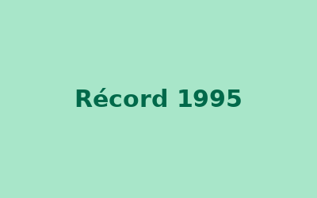

Caso curioso #1: la torta más grande del mundo
En 1995 nuestro equipo participó en un récord Guinness al colaborar en la creación de la torta más grande del mundo. Este hito marcó nuestra historia y sigue inspirando cada creación que sale de nuestro obrador.
Ver caso